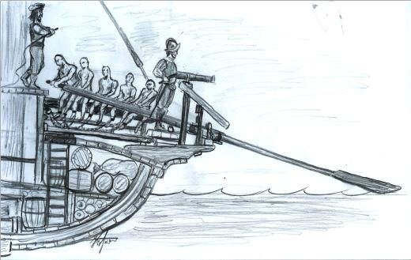
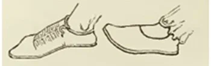

Возьмемся за галошу или Дебри этимологии
Слова все те же, но как будто смысл
Другой, и будто между этих строк
Читаю я невидимые строки.
А. Толстой. Дон-Жуан. 1.
Мы увлеклись подробностями биографии барона де Лагарда и почти выбились из основного русла рассказа. Чтобы не забыть окончательно, что такое галера, вернемся к ее устройству.
Рассмотрим вкратце ту революцию, которая произошла в галеростроении в XVI веке. Когда мы приводили отзыв Брантома о построенной де Лагардом в 1543 году галере La Réale, то отрывок из его работы был дан в переводе на русский. Тем самым, как обычно в таких случаях, мы потеряли важную часть информации. Исправим эту ошибку. Брантом пишет:
« Ce fut luy [le baron de La Garde] qui fit faire ceste belle galère qu'on appelloit La Réalle, et qui l'arma à galoche et à cinq pour banc, dont paradvant on n'en avoit veu en France. » (Brantôme Oeuvres complètes. Grands capitaines françois (éd. Lalanne, t. IV, p. 147))
«Именно он [барон де Лагард] построил эту прекрасную галеру, которая называется Ла Реаль и которая была оснащена по системе à galoche и имела пять [гребцов] на одну банку; подобных галер во Франции еще не видели»
Что же это за «галоша», в которой на каждой банке сидело по пять гребцов?

Copyright der Bilder by Galeotti
Рассматривая ранее различные системы гребли, мы остановились на системе a scaloccio, подробно разобрав устройство весла и биомеханику гребли, т.е. движения каждого гребца. Однако становление этой системы осталось за рамками рассказа.
XVI век стал свидетелем принятия всеми моряками Средиземноморья важных изменений системы гребли. И хотя процесс этот начался уже в начале века, однако первые письменные свидетельства о нем датируются лишь сороковыми годами.. Индивидуальное весло, более легкое, но и менее прочное, которым гребет один гребец, постепенно заменялось большим веслом, которым гребут все гребцы, сидящие на одной банке. У французских авторов это весло первоначально получает название la rame de galoche. (Ср. с приведенным выше высказыванием Брантома). Французский термин galoche никогда не использовался до этого в словарях морской лексики по отношению к веслам. Он применялся лишь для обозначения одного из видов блоков, а именно, канифас-блоков. Принципиальное отличие канифас-блока от других блоков состоит в том, что трос в него можно заводить не только с конца, но с любого места, просто накидывая его как петлю на шкив блока. Эта возможность обеспечивалась специальным вырезом в щеке блока. Вот изображение одного из таких канифас-блоков из «Морского словаря» О.Жаля.

Не правда ли, натуральная галоша (первоначально в русском языке появилась как «калоша» - видимо от немецкого Kalosche или от существующего уже ранее в русском языке слова («колоша» - «штанина») - и только позже приобрела начальное «г»)? Кстати, наша резиновая галоша по-французски будет caoutchouc. А что касается la galoche , то она изготавливается из кожи и имеет твердую подошву, как правило, деревянную. Носили ее для предохранения от повреждений и грязи мягкой обуви, которую уже непосрественно надевали на ногу. О происхождение французского la galoche единого мнения не существует. Большая часть специалистов склонна считать что слово это восходит к латинскому gallica (чаще, как и в русском, употребляется множественное число gallicæ) – «галльская сандалия». Приведем изображнения двух gallicæ , взятое с барельефа на саркофаге в villa Amendola, Рим. Левое изображение относится к обуви галльского правителю, а правое – к обуви пленника-галла.

Прослеживая этимологию термина la galoche во французском морском языке, О.Жаль пишет, что «первым, кто употребил этот морской термин был П.Фурнье (Ρ. Fournier), который в своем морском словаре в 1643 году писал про les galoches: « Ce sont deus trous dans les éscoutilles par lesquels passent les câbles. » «Это два отверстия в крышке люка, через которые проходит трос». В данном случае с указанным О.Жалем временем первого появления термина придется не согласиться, приведя в подтверждение нашей позиции хотя бы отрывок из Брантома, процитированный выше. Приходится также принять, что по отношению к веслу этот термин впервые появился не во Франции, а в Италии: прослеживая историю его возникновения, мы придем к итальянскому galloccia (Dizionario di Marina médiévale e moderna , Roma, 1937), которое в свою очередь восходит к позднелатинскому galochia. Дюканж считает, что последний термин как раз и происходит от gallica. Однако четко установить, какое отношение имеет галльская сандалия к тем морским предметам, которые обозначаются термином les galoches, пока не удалось никому. Чтобы выявить эту зависимость, О.Жаль ставит под сомнение определение, данное в словаре П.Фурнье, приводя для этого более поздние определения из словарей Guillet (1678) и Desroches (1687 ), где речь идет не об отверстиях в крышке люка, а о закрывающих эти отверстия сверху деревянных штуках полукруглой формы с выемкой внутри, через которую входит трос, «подобно тому, как нога входит в башмак ». Начиная с XVII века термин la galoche был распространен также на деревянные штуки с полукруглыми выемками для прохода шкотов, которые крепились к борту или палубе, а также на канифас-блоки.
Но какое отношение это имеет к веслу?
Чтобы как-то разобраться в этом, заметим что в это время в Испании на равных правах с remo de galocha для обозначения нового весла употреблялось remo de escalamo. Термин l’escalamo – это уключина, «два деревянных или железных штыря, укрепленных на планшире на расстоянии между ними, достаточном для свободного движения весла при гребле». Используя этот пример, некоторые исследователи пытались объяснить появление названия весла новой системы гребли как следствие введения нового способа крепления весла к борту. Этот вариант имеет право на существование, но не исключает и другие варианты. В упомянутом выше словаре Dizionario di Marina ... приводится еще одна интерпретация итальянского выражения rema de scaloccio (или rema a scaloccio): «messi a scala, cioè ordinati in varii gradi tra pedagna, banchetto e banco». Здесь scala – это лестница. Помните, как мы изучали биомеханику движения гребцов при системе гребли a scaloccio? Движение гребца подобно подъему по лестнице: гребец «ступает последовательно на подножку, банкет и банку».
Итак, мы имеем две интерпретации: первая связана со способом крепления весла на постице, вторая – со спецификой движения гребца при новой системе гребли. Ввиду того, что оба эти процесса имели место одновременно, не исключается, что название новой системы гребли a scaloccio родилось как раз в результате взаимодействия двух упомянутых вариантов.
Отсюда понятно, почему процесс внедрения новой системы гребли растянулся на достаточно длительное время, на несколько десятилетий – ведь изменения коснулись принципиально важных элементов устройства галеры. И хотя первые упоминания новой системы гребли относятся, как уже было сказано, к 40-м годам XVI века, но, например, в Венеции и к сражению при Лепанто (1571 г.) остались галеры, использующие remi interzadi, весла, свойственные для промежуточных систем гребли. Но несмотря на постепенность, процесс этот был необратим. Так, к 1564 году на Сицилии было 15 галер, на кажной из которых имелось по 58 rames de galoche: 48 на 24 банки гребцов и 10 запасных. Записи о передаче в августе 1575 года сорока галер «в аренду» дону Альваро де Базану (Don Alvaro de Bazan) позволяют подобный же факт констатировать и для галер Неаполя. В Венеции к 1600 году известный командир галерной эскадры Пантеро Пантера знал о старой системе уже только по слухам, хотя эта система и продолжала иметь своих сторонников среди страрых капитанов галер.
Какие новые возможности открывались с введением системы гребли a scaloccio? На первый взгляд, никаких. Даже наоборот. Если верить авторитетным мнениям М.А.Колонна (M. A. Colonna) или Пантеро Пантера (P.Pantera), то нужно признать, что очень тяжелое, большое весло, если на него посадить трех гребцов, было менее эффективно, чем три легких весла, каждым из которых гребет один человек. Однако преимущество нового весла состояло в том, что при системе a scaloccio существовала возможность увеличения числа гребцов на каждой банке. Правда и при старой системе существовали квадриремы, имеющие четыре ряда весел. Почти все капитаны-командиры эскадр на Средиземном море, как христиане так и мусульмане, использовали этот более дорогой способ. В отдельных случаях четыре ряда имели и обычные галеры. Но от квинкеремы с пятью индивидуальными веслами в отдельной группе, которую изобрел В.Фаусто (мы рассказывали об этом раньше) пришлось быстро отказаться как от очень дорогой.
Использование преимуществ новой системы гребли началось незамедлительно. С 1560 года Don Garcia de Toledo рекомендовал оснащать все новые галеры четырьмя гребцами на банку, чтобы догонять турецкие более легкие и быстроходные галиоты и фусты. К Лепанто почти все испанские галеры имели уже по 5-6 гребцов на весло. (Правда, после 1573 года численность гребцов начала постепенно уменьшаться, но вызвано это было экономическими соображениями. По этой же причине неаполитанский флот был к 1585 году сокращен почти в два раза; эта же тенденция отмечалась и для флота Сицилии. Но эти процессы будут рассмотрены позже, так как они выходят за хронологические рамки данного раздела нашего рассказа: мы же сейчас говорим о периоде «трех осад» , выдержанных мальтийскими рыцарями.)
Прежде чем окончательно закончить этот пост, хочу поставить свою небольшую кляксу в ученых трактатах по этимологии термина галоша. Имеется этимологическая ветвь, которая ведет нас непосредственно к веслу системы a scaloccio . Итальянское gallocce da remo (на венецианском диалекте galozza) означает «la maniglia apposta al girone, che afferra il rematore o i rematori per maneggiare il remo.» (Corazzini Vocabolario Nautico Italiano, Tomo 3) , т.е. «ручка, устанавливаемая на вальке, за которую держится гребец, или гребцы, при гребле». В данном случае нам надо приводить наши изыскания не к самому веслу, а к одной его детали - manilla. Тогда не придется отмахиваться от таких определений в старых словарях, как, например, у П.Фурнье. Galocha это брусок с несколькими отверстиями для кистей рук.
Продолжим позже.
Тех, кого это касается, поздравляю с новым учебным годом. Ученье – свет.